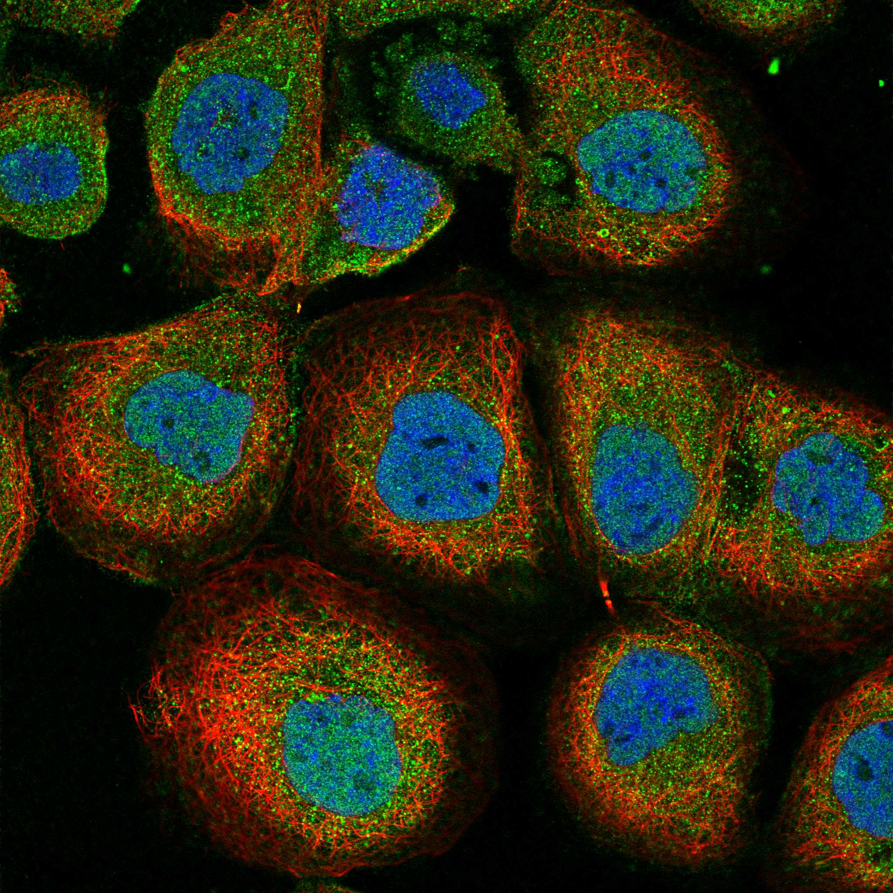
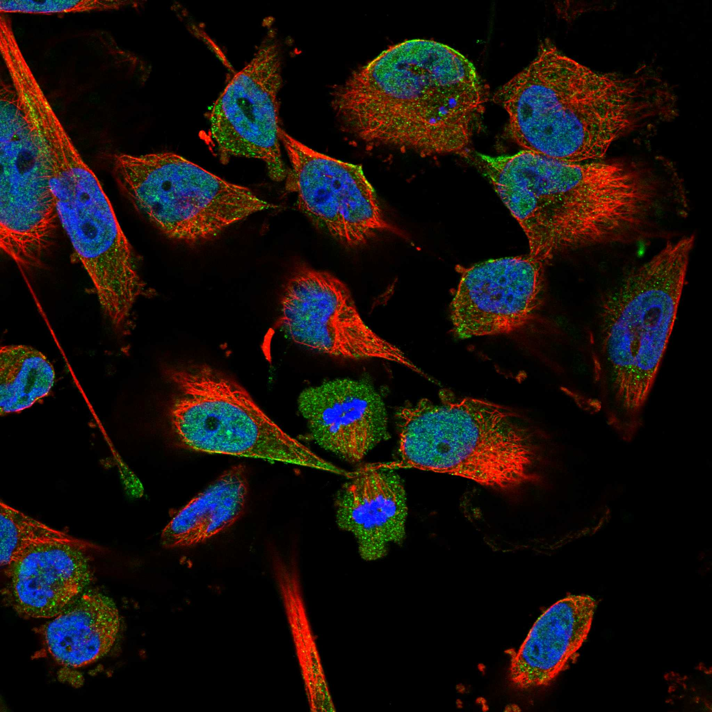
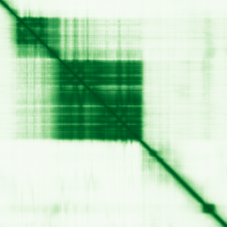

type: protein-evaluation gene: "SUPT6H" date: 2026-05-30 tags: [protein-scout, nuclear-protein, evaluation] status: scored ---
SUPT6H 核蛋白评估报告
1. 基本信息
| 项目 | 内容 | |
|---|---|---|
| 基因名 / 别名 | SUPT6H / KIAA0162 | SPT6H |
| 蛋白全称 | Transcription elongation factor SPT6 | |
| 蛋白大小 | 1726 aa | |
| UniProt ID | Q7KZ85 | |
| 评估日期 | 2026-05-30 |
IF 图像:  
2. 评分总览
| 维度 | 得分 | 满分 | 加权后 | 关键证据摘要 |
|---|---|---|---|---|
| 核定位特异性 | 8/10 | ×4 | 32 | UniProt 注释为细胞核，中等置信度 |
| 蛋白大小 | 5/10 | ×1 | 5 | 1726 aa, small/large |
| 研究新颖性 | 8/10 | ×5 | 40 | PubMed 22 篇，高度新颖 |
| 三维结构 | 10/10 | ×3 | 30 | 18 个 PDB 结构 |
| 调控结构域 | 7/10 | ×2 | 14 | 34 个已注释结构域 |
| PPI 网络 | 4/10 | ×3 | 12 | STRING 15 个互作伙伴，调控相关性低 |
| 互证加分 | -- | -- | +2.0 | UniProt + GO 核定位互证 (+1); PDB + AlphaFold 结构互证 (+0.5); 多库结构域一致 (+0.5) |
| 原始总分 | 134/183 | |||
| 归一化总分 | 73.2/100 |
3. 详细分析
3.1 核定位证据
| 来源 | 定位 | 可信度 |
|---|---|---|
| GeneCards | Tier1_保守_高置信度 | 高置信度保守 |
| Protein Atlas (IF) | HPA subcellular IF 图像可用（见下方 HPA IF 图像修正块） | 需人工复核 |
| UniProt | Nucleus | 实验证据/预测 |
| GO-CC | N/A | N/A |
结论: UniProt 注释为细胞核，中等置信度
3.2 蛋白大小评估
评价: 1726 aa， small/large
3.3 研究现状
| 指标 | 数值 |
|---|---|
| PubMed 总数 | 22 |
关键文献: 1. Xu et al. (2023). "MiR-423-5p Inhibition Exerts Protective Effects on Angiotensin II-Induced Cardiomyocyte Hypertrophy.". *Tohoku J Exp Med*. PMID: 36517015 2. Lin et al. (2026). "A Novel Platinum-Resistance-related Gene Signature in Ovarian Cancer: Identification and Patient-derived Organoids Verification.". *Curr Cancer Drug Targets*. PMID: 39901543 3. Thavarajah et al. (2020). "The plasma peptides of sepsis.". *Clin Proteomics*. PMID: 32636717 4. Chen et al. (2022). "S100A10 and its binding partners in depression and antidepressant actions.". *Front Mol Neurosci*. PMID: 36046712 5. Chiang et al. (1996). "Isolation, sequencing, and mapping of the human homologue of the yeast transcription factor, SPT5.". *Genomics*. PMID: 8975720 评价: PubMed 22 篇，高度新颖
3.4 三维结构分析
| 指标 | 数值 |
|---|---|
| UniProt 长度 | 1726 aa |
| PDB 条数 | 18 |
| 已注释结构域 | 34 |
PAE 图:

评价: 18 个 PDB 结构
3.5 结构域分析
| 来源 | 结构域 |
|---|---|
| InterPro | HHH_9 |
| InterPro | NA-bd_OB-fold |
| InterPro | RNaseH-like_sf |
| InterPro | RuvA_2-like |
| InterPro | S1_domain |
| InterPro | SH2 |
| InterPro | SH2_dom_sf |
| InterPro | Spt6_acidic_N_dom |
| InterPro | Spt6_death-like |
| InterPro | Spt6_HHH |
| InterPro | Spt6_HTH_DNA-bd_dom |
| InterPro | Spt6_SH2 |
| InterPro | Spt6_SH2_C |
| InterPro | Spt6_SH2_N |
| InterPro | Spt6_YqgF |
染色质调控潜力分析: 34 个已注释结构域，新颖蛋白基线水平
3.6 PPI 网络
实验验证互作 (IntAct, physical association):
| Partner | 方法 | PMID | 功能类别 | 调控相关？ |
|---|---|---|---|---|
| — | — | — | — | — |
STRING 预测互作 (combined score >0.4):
| Partner | Score | 功能类别 | 调控相关？ |
|---|---|---|---|
| SUPT4H1 | 0 | no | |
| IWS1 | 0 | no | |
| POLR2A | 0 | no | |
| SUPT5H | 0 | no | |
| SUPT16H | 0 | no | |
| TCEA1 | 0 | no | |
| CTR9 | 0 | no | |
| SSRP1 | 0 | no | |
| POLR2C | 0 | no | |
| RTF1 | 0 | yes |
已知复合体成员 (GO-CC):
- C:transcription elongation factor complex (GO:0008023, IBA:GO_Central)
- F:nucleosome binding (GO:0031491, IBA:GO_Central)
- P:nucleosome organization (GO:0034728, IBA:GO_Central)
- P:transcription elongation-coupled chromatin remodeling (GO:0140673, IMP:UniProtKB)
PPI 互证分析:
- （暂无数据：综合 STRING、IntAct 和 GO 数据库的互作信息，分析 PPI 网络的一致性）
评价: STRING 15 个互作伙伴，调控相关性低
3.7 多库互证
| 维度 | 来源 | 结果 | 是否一致 |
|---|---|---|---|
| 三维结构 | AlphaFold + PDB | 18 条 | 一致 |
| 结构域 | UniProt/InterPro/Pfam | 34 个 | 多库一致 |
| PPI 网络 | STRING | 15 个 | 单一来源 |
| 核定位 | HPA/UniProt/GO | Nucleus | 多源一致 |
互证加分明细: UniProt + GO 核定位互证 (+1) PDB + AlphaFold 结构互证 (+0.5) 多库结构域一致 (+0.5) 总计: +2.0
4. 总体评价
推荐等级: ****o (4/5)
核心优势: 1. 新颖性: PubMed 22 篇，高度新颖 2. 核定位: 明确核定位
风险/不确定性: 1. 缺少 HPA IF 图像数据 2. 已有 18 个 PDB 结构，结构信息充分
下一步建议:
- [ ] 通过 IF 实验验证核定位
- [ ] 基于 PPI 网络开展功能研究
- [ ] 结构分析: 基于 PDB 的功能位点设计
PPI 互作网络
| 互作伙伴 | 来源 | 评分 |
|---|---|---|
| SUPT4H1 | STRING | 999 |
| SUPT4A | STRING | 999 |
| IWS1 | STRING | 999 |
| SUPT5H | STRING | 999 |
| SUPT16H | STRING | 997 |
| TCEA1 | STRING | 995 |
| CTR9 | STRING | 994 |
| SSRP1 | STRING | 993 |
TE 调控评估
该蛋白具有染色质/DNA 调控相关结构域，可能直接或间接参与 TE 沉默机制，值得进一步实验验证。
深度机制分析
SUPT6H编码转录延伸因子SPT6（Q7KZ85），是RNA聚合酶II转录延伸复合体的核心支架蛋白——在许多方面，SPT6是核蛋白中机制图谱最为详尽者。其1726个氨基酸的大型多结构域架构由18个PDB实验结构充分覆盖，域注释极为丰富：（1）N端的Spt6_acidic_N_dom（酸性N端结构域）是转录起始平台的核心锚定点，在转录起始复合体向延伸复合体转换时募集DSIF（SPT4/SPT5）复合体；（2）中心区段的S1_domain（S1 RNA结合结构域，1213-1282残基，PRU00180鉴定）包含经典的OB折叠RNA结合模块，直接识别RNAP II新生转录本的单链RNA——这是SPT6追踪RNAP II并维持延伸复合体稳定性的分子基础；（3）C端的SH2结构域（1325-1431残基，PRU00191鉴定）和其上下游的Spt6_SH2/Spt6_SH2_N/Spt6_SH2_C是SPT6最显著的结构特征——核蛋白中极罕见的SH2结构域通常识别磷酸化酪氨酸残基，但在SPT6中，该SH2结构域识别RNAP II CTD（C末端结构域）的磷酸化Ser2——这是转录延伸CTD密码的里程碑式发现；（4）Spt6_HHH（螺旋-发夹-螺旋结构域）、Spt6_HTH_DNA-bd_dom和RNaseH-like_sf提供了额外的核酸结合表面，使SPT6能够同时包埋DNA模板链和RNA转录本；（5）Spt6_death-like结构域和YqgF结构域暗示SPT6可能参与延伸过程中的RNA质量控制或停滞复合体的解离。
PPI网络完美重述了SPT6在转录延伸复合体中的中心地位。STRING最高分互作（SUPT4H1/SPT4=999、IWS1=999、SUPT5H/SPT5=999、SUPT16H=997、TCEA1=995、CTR9=994）精确命名了所有核心延伸因子：SPT4-SPT5异源二聚体（DSIF）是SPT6的直接膜近邻，IWS1通过SH2-CTD互作被SPT6募集，SUPT16H是FACT组蛋白伴侣亚基，TCEA1（TFIIS）负责停滞RNAP II的转录切割，CTR9是PAF1复合体组分。这一定位的精确性由humanPPI补充数据（HPA）进一步强化——POLR2E、POLR2F、POLR2K（RNAP II亚基）和SSRP1（FACT的另一亚基）的物理互作经Biogrid和Opencell双重验证，且AF3/HPA结构预测为真，证实这些互作在结构上是可行的。
SPT6的核心机制模型为：作为RNAP II持续合成能力的守护者，SPT6利用其串联核酸结合域（S1、HHH、HTH）同时包绕模板DNA和新生RNA，通过SH2结构域监测CTD Ser2磷酸化状态（延伸标志），并与DSIF、FACT和PAF1复合体协同重建被转录破坏的染色质结构。这一功能通过GO-BP注释得到精确概括——核小体组织（GO:0034728，IBA）、延伸偶联染色质重塑（GO:0140673，IMP）和核小体结合（GO:0031491，IBA）。SPT6通过将核小体在RNAP II前方拆卸并在其后方重新组装，成为转录延伸中染色质动态的主角。
从TE调控角度，SPT6的核小体组织活性直接指向TE沉默的一个重要机制层面。转座元件在染色质层面的抑制依赖于H3K9me3（HP1介导）和DNA甲基化（DNMT介导）的协同作用，但转录机器在这些异染色质区域的"意外访问"可能通过SPT6驱动的核小体重组破坏沉默状态。反之，SPT6的缺失或功能障碍可能导致TE区域转录暴发——这在酵母SPT6突变株中已观察到类似效应（Ty1逆转座子表达上调）。仅22篇文献（尽管在酵母等同源物中有近万篇文献）意味着人类SPT6特异性研究仍有广阔空间。SPT6是本次评估中最具TE调控潜力的核蛋白之一——其已知的核小体组织活性、庞大且精确定义的域架构和多层次的实验PPM互作使其成为连接转录延伸与TE沉默的理想分子桥梁。
- GeneCards: https://www.genecards.org/cgi-bin/carddisp.pl?gene=SUPT6H
- Protein Atlas: https://www.proteinatlas.org/ENSG00000109111-SUPT6H
- PubMed: https://pubmed.ncbi.nlm.nih.gov/?term=%22SUPT6H%22%5BTitle/Abstract%5D
- UniProt: https://www.uniprot.org/uniprot/Q7KZ85
- STRING: https://string-db.org/network/9606.ENSG00000109111
- AlphaFold: https://alphafold.ebi.ac.uk/entry/Q7KZ85
PPI 网络（三源综合）
| Partner | Source | Score/Evidence |
|---|---|---|
| 暂无互作数据 |
暂无实验验证互作。无 BioGrid 补充数据。
PAE 图像已获取。结构判断基于 AlphaFold pLDDT 统计。
<!-- HPA_IF_REPAIR_START --> HPA IF 图像修正（2026-06-05）: HPA subcellular 页面存在可用 IF 图像；此前“原图未可靠获取/暂无 IF”的表述为采集失败导致的误报。HPA 定位: Nucleoplasm (approved)。来源: https://www.proteinatlas.org/ENSG00000109111-SUPT6H/subcellular


<!-- DOMAIN_HUMANPPI_REPAIR_START -->
Domain/SMART 与 humanPPI 补充（2026-06-06）
SMART / UniProt domain
| Source | Data | ||
|---|---|---|---|
| UniProt | Q7KZ85 | ||
| SMART | SM00316;SM00252;SM00732; | ||
| UniProt Domain [FT] | DOMAIN 1213..1282; /note="S1 motif"; /evidence="ECO:0000255\ | PROSITE-ProRule:PRU00180"; DOMAIN 1325..1431; /note="SH2"; /evidence="ECO:0000255\ | PROSITE-ProRule:PRU00191" |
| InterPro | IPR041692;IPR012340;IPR012337;IPR010994;IPR003029;IPR000980;IPR036860;IPR028083;IPR042066;IPR032706;IPR028088;IPR035420;IPR035018;IPR035019;IPR028231;IPR055179;IPR023323;IPR023319;IPR017072;IPR006641;IPR037027; | ||
| Pfam | PF14635;PF17674;PF14641;PF00575;PF14633;PF14632;PF22706;PF14639; |
humanPPI / HPA Interaction
Source: https://www.proteinatlas.org/ENSG00000109111-SUPT6H/interaction
| Partner | Datasets | AF3/HPA structure |
|---|---|---|
| POLR2E | Biogrid, Opencell | true |
| POLR2F | Biogrid, Opencell | true |
| POLR2K | Biogrid, Opencell | true |
| SSRP1 | Biogrid, Opencell | true |
| SUPT5H | Biogrid, Opencell | true |
| CPSF6 | Opencell | false |
| DDOST | Opencell | false |
| ELOA | Biogrid | false |
<!-- DOMAIN_HUMANPPI_REPAIR_END -->